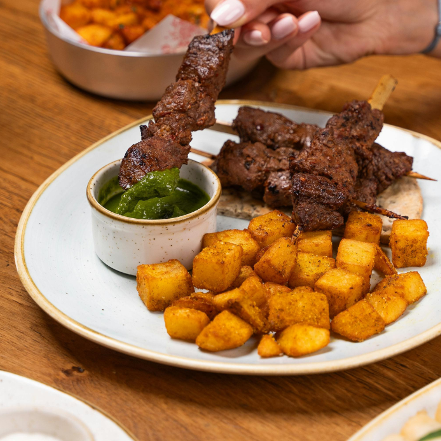

Have you ever felt frustrated because your cat is being so picky about its food? Wondering why your feline friend is so hard to please? The answer lies in their nature and anatomy. Understanding these factors can help you find the right solutions to make mealtime more enjoyable for your cat.
Many people turn to online advice to find brands of food that might work for their picky cats, but often end up feeling disheartened. You might have spent a lot of money on various types of canned food only to find that your cat still turns its nose up at it, or even refuses to try it. It can be really discouraging!
In this article, we’ll explore the reasons behind a cat’s picky eating habits and offer some strategies to improve the situation. If your cat suddenly becomes fussy or loses its appetite, it could be a sign of a health issue. In such cases, it’s best to monitor your cat’s overall condition and consult a veterinarian.
We’ll also address some common myths about feeding picky cats, such as avoiding fish-based foods and treats out of fear that they might cause problems. Stay tuned for future articles where we’ll tackle these topics.
Let’s dive into the reasons why cats are picky eaters and explore some solutions:
Cats’ food preferences are often influenced by what their mother ate during pregnancy and kittenhood. Although it might be challenging to pinpoint these preferences, knowing them can help you find a food that your cat will enjoy. If possible, try offering foods similar to what their mother consumed to help your cat accept new meals more readily.
Cats have their own likes and dislikes when it comes to food textures and shapes. Some prefer wet food, which comes in various textures like pâté, shredded, or chunk-style. Try offering different textures to see which one your cat prefers. Moist, mousse-like, and high-viscosity pâtés are often good choices since they’re usually more appealing to cats.
Different brands and flavors of canned food have unique formulations and amino acid profiles, which can affect your cat’s taste preferences. Testing various brands and flavors might help you find one that your cat loves. Remember, your cat’s taste preference can depend on both the brand and the specific amino acids present in the food.
Cats have a less sensitive sense of taste compared to humans, but they have an excellent sense of smell. Warming food to about 30°C (86°F) can help release its aroma and make it more enticing for your cat. If the food is cold, especially in chilly weather, warming it up can help your cat better appreciate the smell.
The material and shape of the bowl can affect the food’s aroma and temperature. Try using different types of bowls to see if your cat shows more interest. Portion sizes can also impact appetite; offering smaller portions more frequently can sometimes encourage your cat to eat more.
Sprinkling a few of your cat’s favorite treats on top of its food can enhance the aroma and stimulate its appetite. Be sure to keep the amount of treats to no more than 10% of your cat’s daily caloric intake to maintain a balanced diet.
For playful cats, food-dispensing toys can make mealtime more fun. Placing food inside these toys can stimulate your cat’s hunting instincts and make eating more engaging. Make sure the difficulty level is appropriate to avoid frustrating your cat.
Offering food that your cat enjoys is crucial. The seven methods discussed above should be tried and observed to find what works best for your cat. Don’t let your cat go hungry, as prolonged lack of food can be harmful to their health. With patience and experimentation, you’ll find the right food that your feline friend will happily eat!
Here are selected products from Amazon to assist in your decision-making. Links may contain affiliate marketing programs, where clicking and purchasing may generate a small commission for us (at no additional cost to you), helping maintain our website operations.
To ensure your cat is getting the best nutrition while avoiding unsafe foods, consider these high-quality cat food options:
These options offer both dry and wet food solutions to cater to your cat’s preferences and nutritional needs. By choosing high-quality food, you can help keep your cat healthy and happy.
Want to gain a deeper understanding of cat behavior and how to care for them? Click the link below to read more related articles. read more related articles